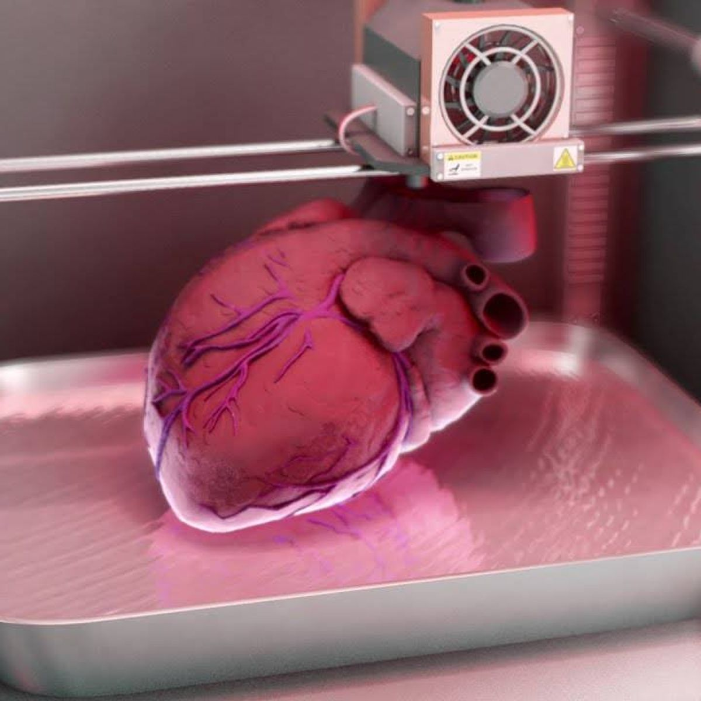

| ¿Qué es el trasplante de órganos? | |
 |
El trasplante de órganos es una intervención médica que implica reemplazar un órgano enfermo o dañado en el cuerpo de una persona con un órgano sano de un donante. Esta práctica médica ha salvado y mejorado la vida de numerosas personas en todo el mundo. |